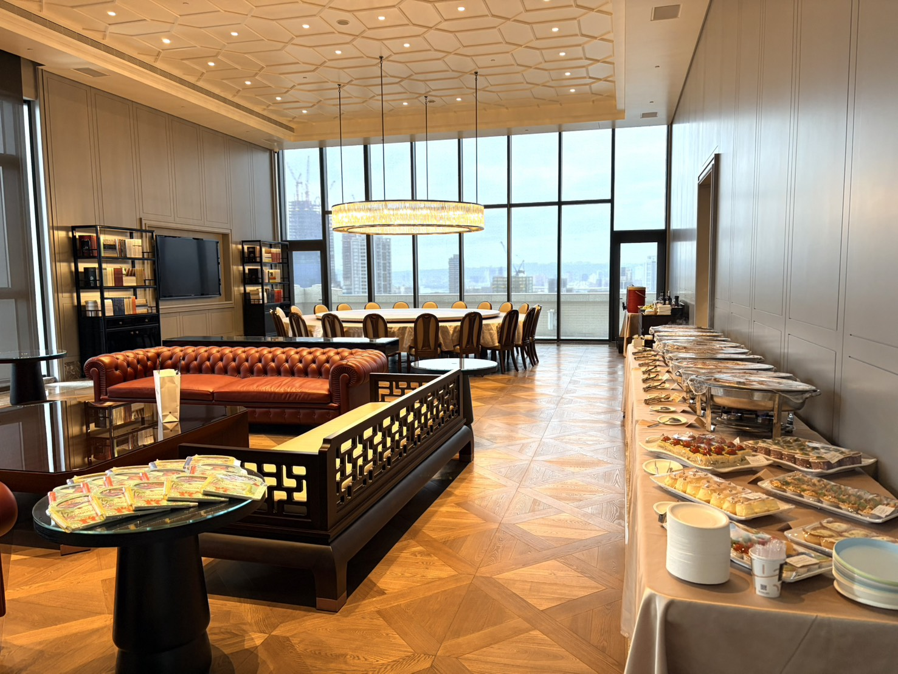
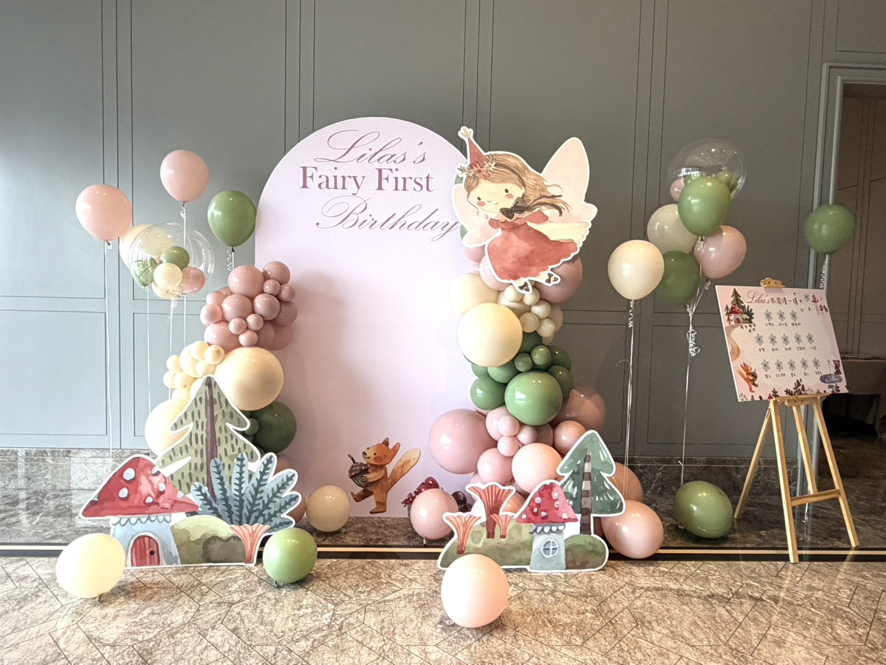
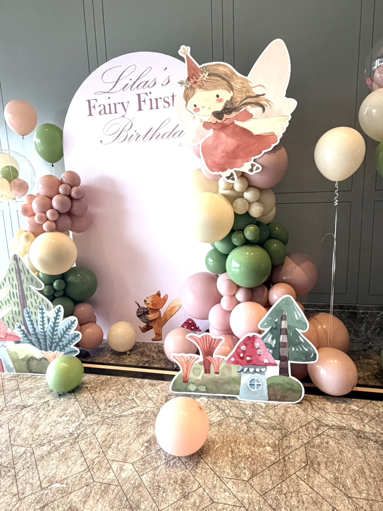
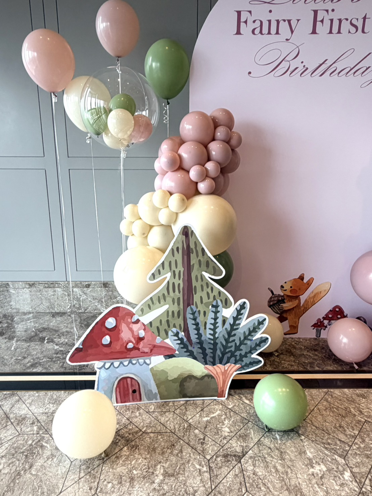
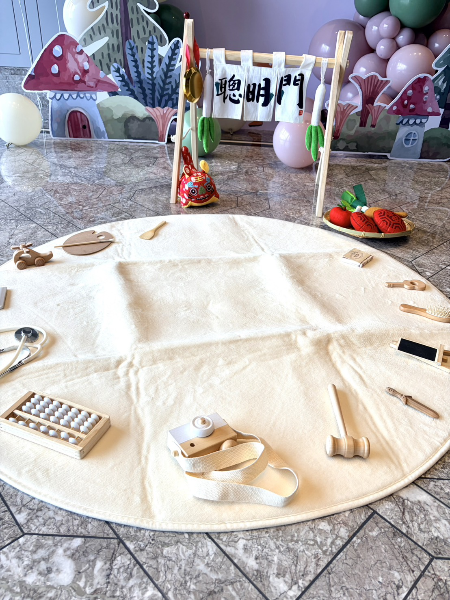
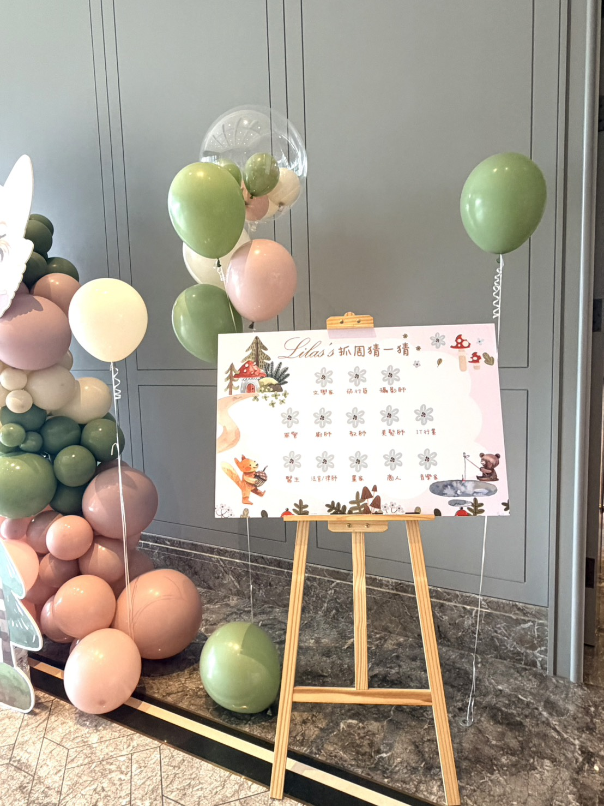
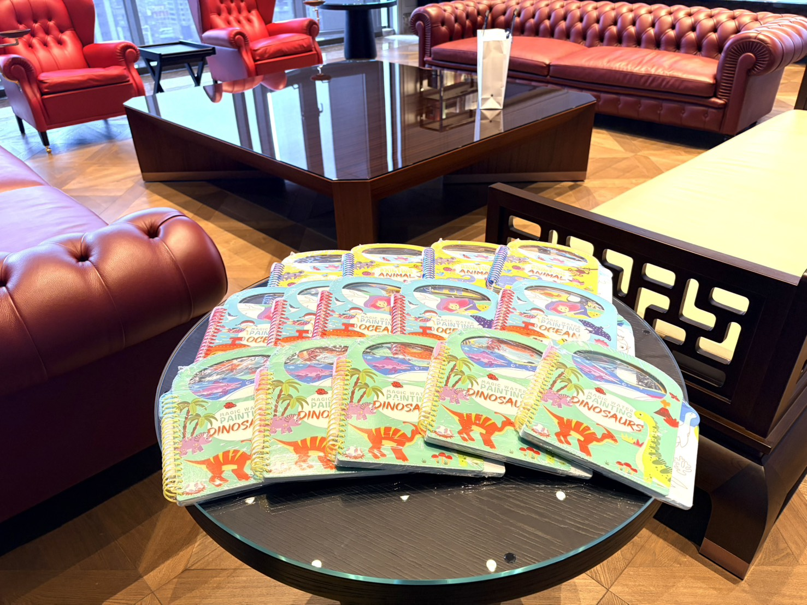
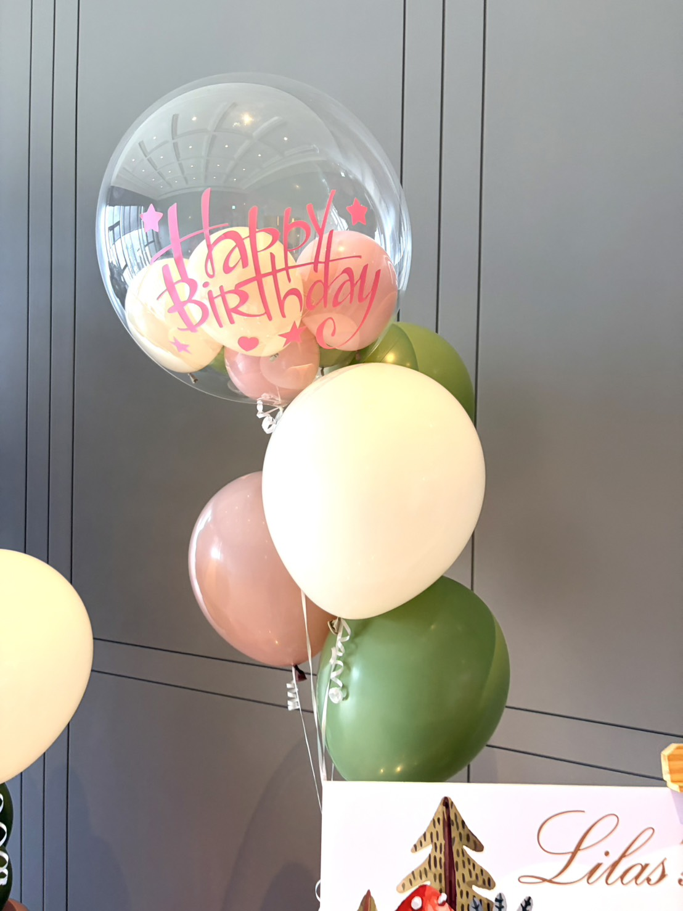

Lilas 的森林童話：台北市中山區抓周生日派對佈置
森林童話主題 × 抓周儀式佈置 × 客製生日背板
地點：台北市中山區
很多時候，大家來到現場看見的是氣球與背板。但真正的故事，在派對開始之前就已經動工了。

在台北市中山區的一個午後，爸媽一早就來到這處活動場地，慢慢確認每一個細節。因為今天，是 Lilas 的第一個生日。這不只是生日派對，也是她人生第一次的抓周儀式。

森林小屋的位置、蘑菇的點綴，還有那面寫著名字的專屬生日背板，都是為了這一刻準備的。


在我們鋪好的抓周地墊上，整齊擺放著象徵不同未來的小物件，前方架設了掛滿蔥蒜的「聰明門」。每一樣道具，都代表著家人對她的期待與祝福。

為了讓來參與的親朋好友一起同樂，現場特別準備了抓周猜一猜的預測板。

用心的爸媽，還準備了精緻的魔法水畫冊繪本，作為送給現場小朋友的禮物。


一歲的 Lilas 現在或許還不知道這一天有多特別。但多年以後，當她翻開照片，也許會看見在那場重要的一歲生日派對裡，爸爸媽媽為她準備了一座小小的森林。
這座森林，就這樣出現在台北市中山區。有些畫面會慢慢淡去，但這一天，大概會一直留在照片裡。
關於台北市抓周生日佈置的常見問題
- Q: 台北市抓周派對佈置通常需要提前多久預約？
- A: 建議至少提前 3 至 4 週預約。若需要客製背板、特定主題設計或餐廳場地配合，越早安排越能保留完整製作與溝通時間。
- Q: 抓周派對佈置包含哪些基本項目？可以客製化嗎？
- A: 包含主題生日背板、空飄波波球與氣球鍊，以及抓周必備的「聰明門」、抓周地墊與道具。全套內容皆可依場地客製。
- Q: 如果宴會廳的佈置時間有限，你們能配合餐廳進撤場嗎？
- A: 沒問題。我們會事先在工作室完成大部分組裝，現場只需定位與微調，精準配合宴會廳進場規範，並迅速完成撤場。
正在規劃專屬的抓周與生日派對嗎？
如果您希望為寶貝創造一個充滿溫馨與質感的專屬回憶，氣球大叔 Sony 專注於提供高品質的情境佈置與儀式規劃：
- 抓周派對佈置：聰明門、抓周地墊、互動預測板。
- 一歲生日主題佈置：依據您的喜好量身打造風格。
- 客製生日背板與氣球設計：高質感色系搭配與精緻氣球鍊。
- 宴會廳 / 餐廳進撤場配合：專業團隊，迅速俐落不影響流程。
本文整理於 2026年3月9日，完整紀錄真實活動現場氛圍。